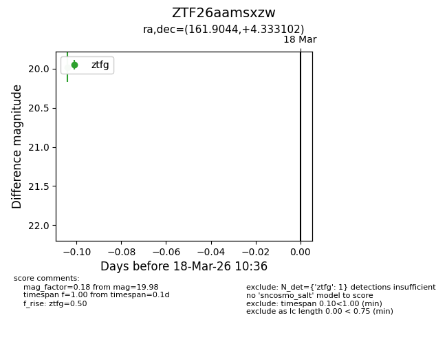
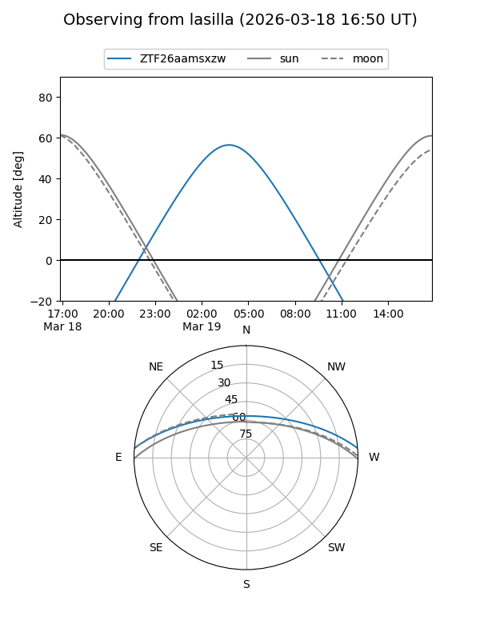
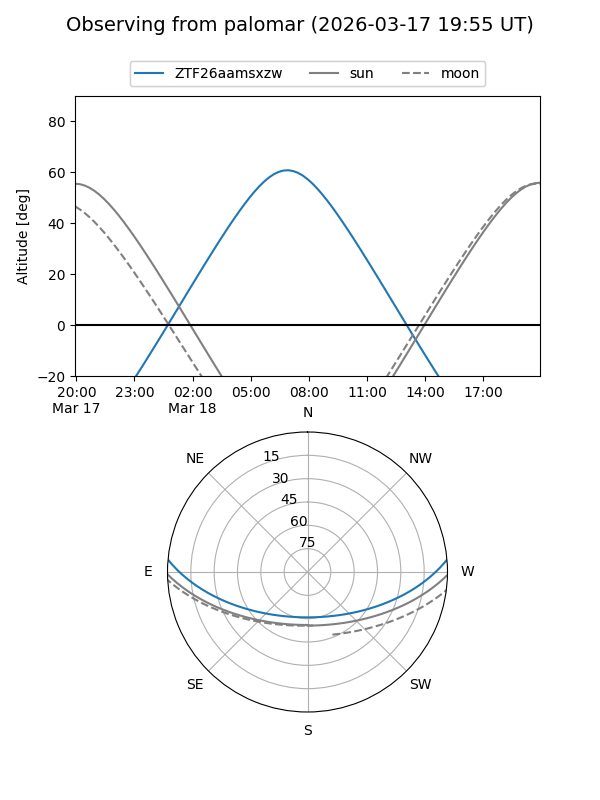

ZTF26aamsxzw
Target ZTF26aamsxzw at 2026-03-18 10:38
Aliases and brokers:
FINK: link
Lasair: link
ALeRCE: link
alt names
ZTF26aamsxzw (ztf,fink_ztf)
Coordinates:
equatorial (ra, dec) = 161.9044,+4.33310
equatorial (HMS+DMS) = 10:47:37.05,+04:19:59.17
galactic (l, b) = (245.1071,+52.70232)
Flags:
Photometry:
last ztfg=19.98
1 ztfg detections
Lightcurve

Visibility


Additional plots